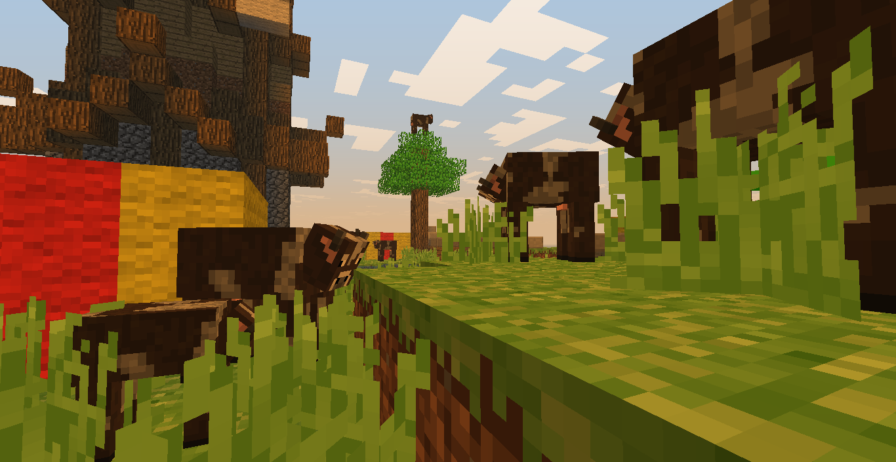

More Models

More models is a lightweight ClassiCube plugin which brings more than just the default models into the game. Locked and loaded with customized models, More Models is easy to install and even easier to use.
Model requests are always open and can be requested here.
Release
Installation is as simple as a few clicks and drags and takes less than two minutes.
Step 1:
Download the latest files from here. If you are unsure of which to download, type /client gpu in-game. It will tell you whether to download the 64 bit .zip or the 32 bit .zip.
Step 2:
Extract the .zip onto your computer, there should be two files; ModelTextures.zip and More-Models.dll.
Step 3:
Place ModelTextures.zip in your ClassiCube texture pack folder. By default it should be [ClassiCube Repository]\texpacks).
Step 4:
Place More-Models.dll in your ClassiCube plugins folder. If it doesn't exist, create a new plugins folder and put it in that.
Step 5:
Either join a server or a single-player world and press Esc > Change texture pack... then click on ModelTextures.zip